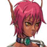

.
Each character represents an online player.
Players start the adventure as hunters hired
by the government.
In PSO, there are 3 types of hunters that players
can choose.
Players can also choose the race of their character.
Here are the differences of each hunter class:
.
|
Click for a larger
image of each hunter.
| Hunter |
This class is good at hand-to-hand combat with the photon
saber,
a weapon which consists of particles of light called "photons." |
 |
 |
| Ranger |
This class has experience with guns.
This hunter is also good at various ranged attacks. |
|
|
| Force |
This class uses magic to attack,
heal, and support other players. |
 |
|
.
We will give you more information about other characters later.
More fun only in the online play is next.
.
|
|